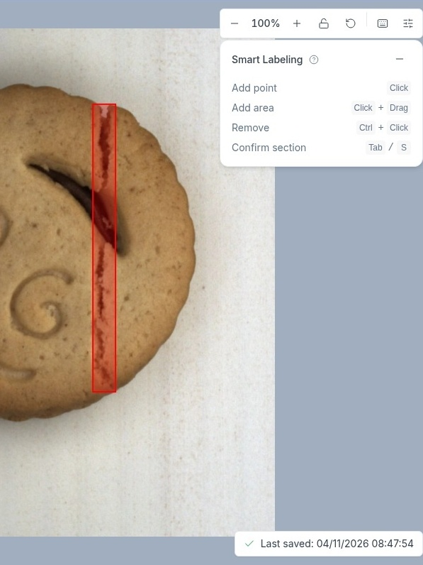
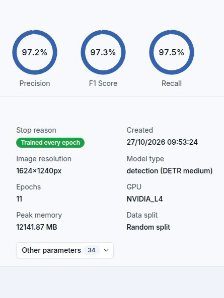
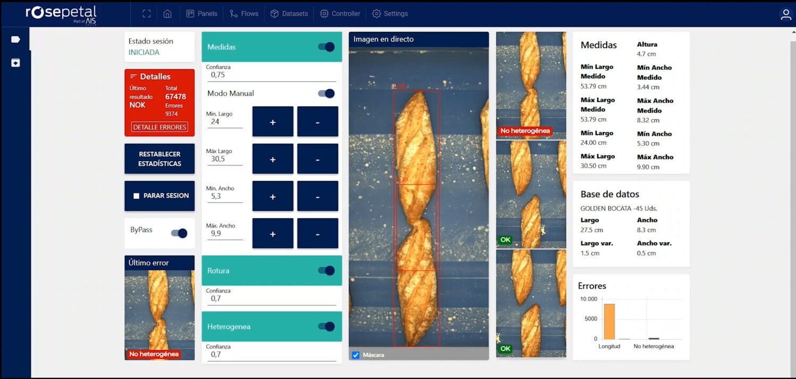
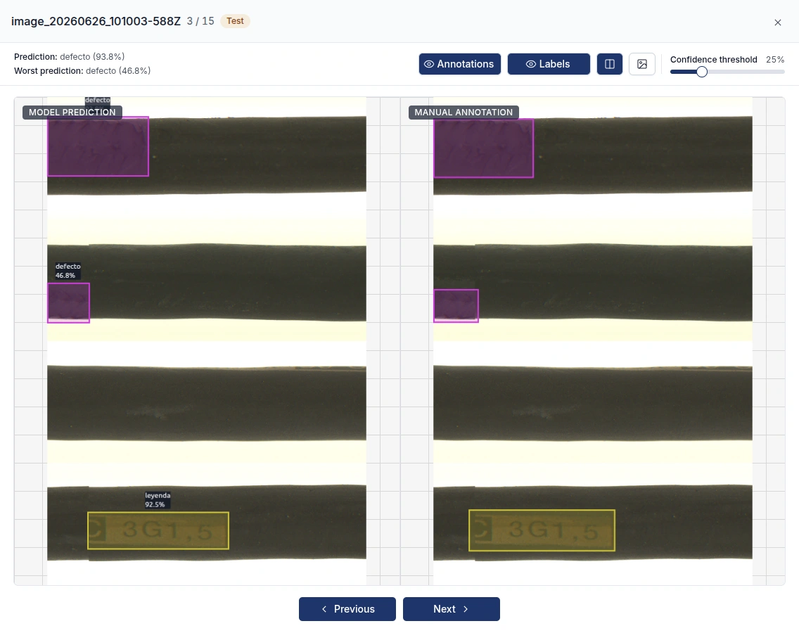

Un recorrido de trabajo, de principio a fin
Rosepetal reúne herramientas para preparar datos, entrenar modelos y utilizarlos en una aplicación de inspección. Cada pieza recibe su resultado, OK o NOK, con su puntuación, y los flujos de captura se editan en Node-RED.

Anotar

Entrenar

Usar
Validación del modelo

Predicciones y anotaciones, lado a lado